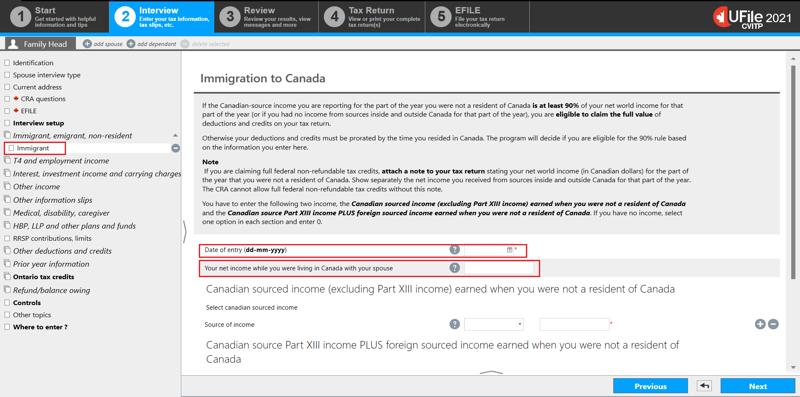
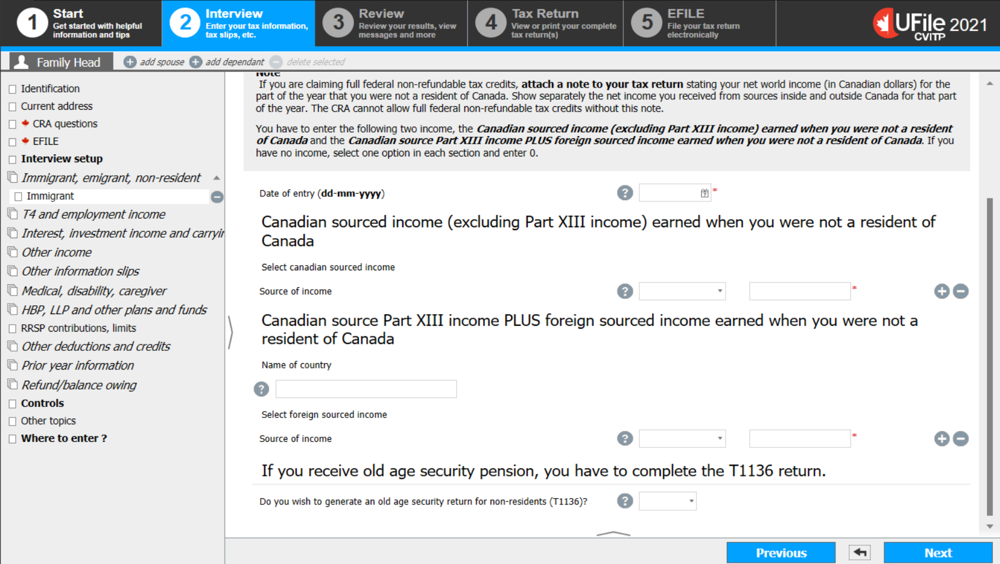
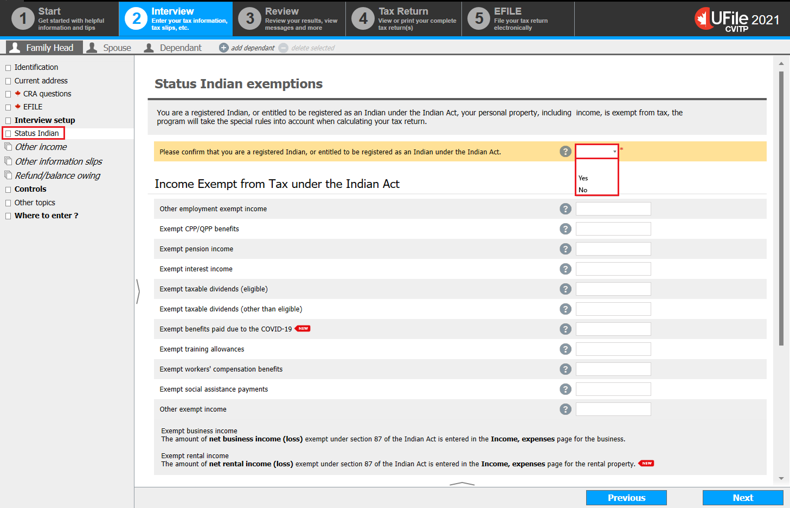
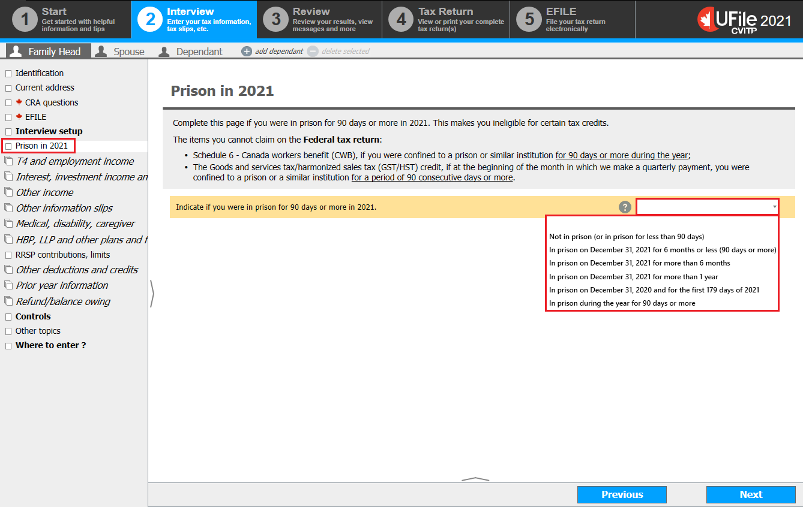

Interview setup

Text version of this screenshot
UFile screen
Under Interview tab
Family Head sub-tab
Interview setup topic is highlighted
Specific situations section is highlighted
- click Interview setup in the left-side menu
Instructions for Newcomers
- tick the box next to Immigrant, emigrant, non-resident taxpayer, you are a Canadian residents whose spouse, or common-law partner immigrated to Canada in the year in the Specific situations section
- click Next
Instructions for Indigenous peoples
- tick the box next to Tax return for a Status Indian in the Specific situations section
- click Next
Instructions for Incarcerated individuals
- check the box next to Prison in 2022 in the Specific situations section
- click Next
Newcomers

Text version of this screenshot
UFile screen
Under Interview tab
Family Head sub-tab
Interview setup topic
Immigrant, emigrant or non-resident page
Instructions for newcomers
- click Immigrant, emigrant, non-resident in the left-side menu
- click the + sign next to You immigrated to Canada in 2022
Instructions for a newcomer spouse
- click the + sign next to You are a Canadian resident and your spouse immigrated to Canada in 2022
Newcomers
Text version of this screenshot
UFile screen
Under Interview tab
Family Head sub-tab
Interview setup topic
Immigrant option is highlighted
Immigration to Canada page
Date of entry (dd-mm-yyyy) – empty field for day, month, year is highlighted
Your net income while you were living in Canada with your spouse – empty field is highlighted
- enter the Date of entry for the individual
- if the individual identified they had a spouse, the tax software generates the additional field, Your net income while you were living in Canada with your spouse
- if both spouses share the same date of entry and have been living together (married or common-law) since that date, leave this field blank to allow the tax software to use the amount from line 23600
- if the spouse has a different date of entry than the individual, enter the individual’s net income for the time spent living in Canada with their spouse
Newcomers
Text version of this screenshot
UFile screen
Under Interview tab
Family Head sub-tab
Interview setup topic
Immigrant option
Canadian source Part XIII income PLUS foreign sourced income earned when you were not a resident of Canada section
- scroll down the tax software screen
- under the Canadian sourced income (excluding Part XIII) earned when you were not a resident of Canada heading:
- select the applicable response from the Source of income drop down menu
- enter the amount (in Canadian dollars) into the next field
- if the individual does not have any income to report, select any source of income and enter $0.00
- under the Canadian source Part XIII income PLUS foreign sourced income earned when you were not a resident of Canada heading:
- enter the individual’s country of origin into the Name of country field
- select the applicable response from the Source of income drop down menu
- enter the amount (in Canadian dollars) into the next field
- if the individual does not have any income to report, select any source of income and enter $0.00
- click Next
Spouse immigration to Canada

Text version of this screenshot
UFile screen
Under Interview tab
Family Head sub-tab
Interview setup topic
Spouse immigrant option
Spouse immigration to Canada page
- enter the amount, if applicable, into the Your net income while you were living in Canada with your spouse field, and click Next
Tax return for Status Indian
Text version of this screenshot
UFile screen
Under Interview tab
Family Head sub-tab
Status Indian topic is highlighted
Status Indian exemptions page
Please confirm that you are a registered Indian, or entitled to be registered as an Indian under the Indian Act is highlighted with the following drop-down options: Yes, No
- click Status Indian from the left-side menu
- select Yes from the Please confirm that you are a registered Indian, or entitled to be registered as an Indian under the Indian Act drop-down menu
Instructions for T4A(P)
- enter the tax-exempt amount from box 20 into the Exempt CPP/QPP benefits field
- enter the information from the T4A(P)as you generally would
Instructions for a T5007 or letter for social assistance payments received
- enter the tax-exempt amount from box 10 into the Exempt workers’ compensation benefits field
- enter the tax-exempt social assistance amount from box 11, the amount in the letter from the band council, or the amount the individual tells you into the Exempt social assistance payments field
- enter the T5007, the amount in the letter from the band council, or the amount the individual tells you, as you generally would for Social assistance payments in a T5007
Instructions for a T4A, COVID-19 benefits
- enter the total tax-exempt amounts from boxes 197, 200, 202, 203, 204 and 211 into the Exempt benefits paid due to the COVID-19 field
- enter the T4A as you generally would
Instructions for a T5 or interest income without a tax slip
- enter the tax-exempt interest in the Exempt interest income field
- enter the T5 and interest income as you generally would
Instructions for a T4A box 48
- enter the tax-exempt amount in the T2125 Self-employment income field
Instructions for tips and gratuities
- enter the tax-exempt amount of tips and gratuities in the Other employment exempt income field
- enter the total amount of tips and gratuities as you generally would
Depending on which Instructions you selected continue to the section:
Prison in 2022
Text version of this screenshot
UFile screen
Under Interview tab
Family Head sub-tab
Prison in 2021 topic is highlighted
Indicate if you were in prison for 90 days or more in 2021 drop-down menu is highlighted with the following drop-down options: Not in prison (or in prison for less than 90 days), In prison on December 31, 2021 for 6 months or less (90 days or more), In prison on December 31, 2021 for more than 6 months, In prison on December 31, 2021 for more than 1 year, In prison on December 31, 2020 and for the first 179 days of 2021, In prison during the year for 90 days or more
- click Prison in 2022 in the left-side menu
- select the applicable situation from the Indicate if you were in prison for 90 days or more in 2022 drop-down menu
- click Next